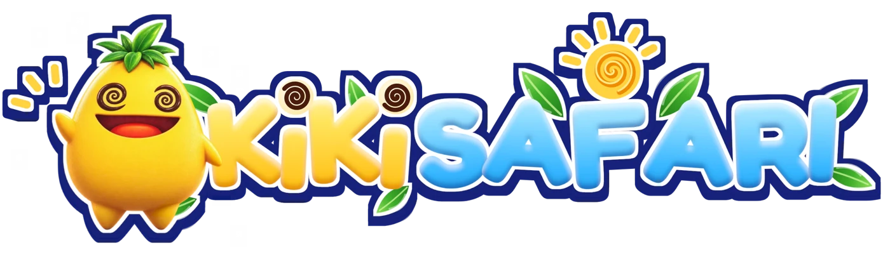
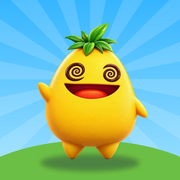

Make it an app
Add Kiki Safari to your Home Screen. It opens full screen and starts faster.
Heads up! Watch your surroundings while you play.


Add Kiki Safari to your Home Screen. It opens full screen and starts faster.
Heads up! Watch your surroundings while you play.
Kiki Safari uses your location while you play to find Kikis, supply stops and Rune Circles near you, and your phone's motion to know which way you're facing. The camera is only used for AR catches, and you can turn AR off.
Nothing is shared with other players. Location is only used while the game is open. For the weather, only your rough area (about 10 km) is sent to Open-Meteo. Online, your explorer name, level and the Kikis you trade, battle with or leave at Rune Circles are visible to other players; no email or real name is needed.